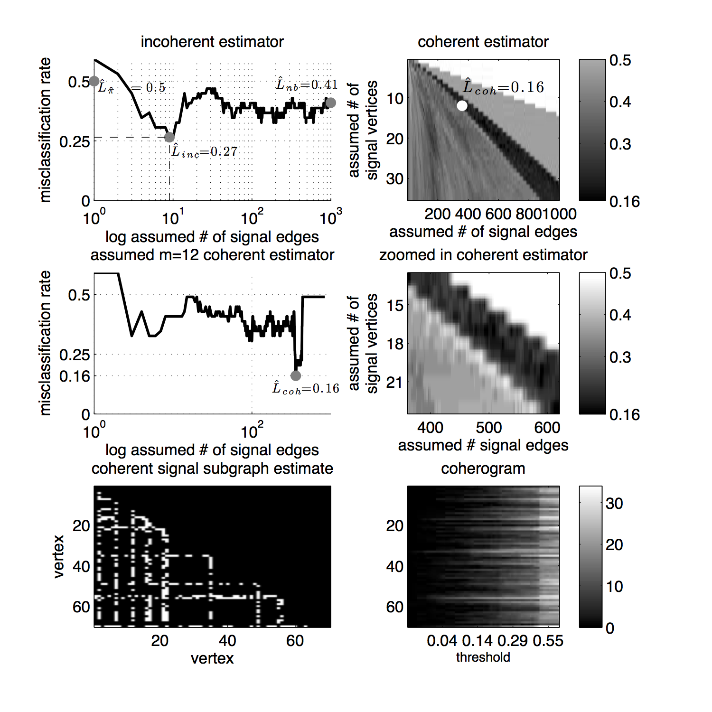
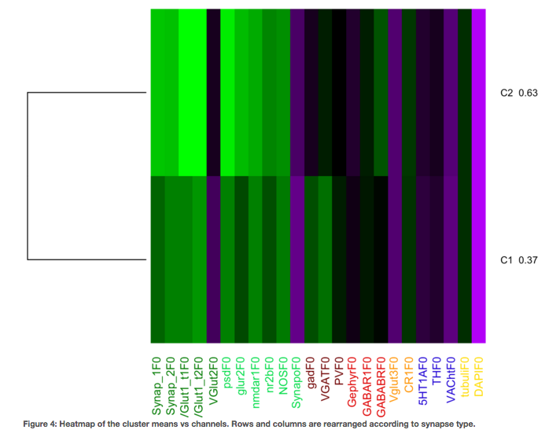

Using Big Data Science to Understand What Goes on in Our Heads
Created by Joshua T. (jovo) Vogelstein
Neurostatistician@Large
{BME,CIS,ICM,Kavli}@JHU
Interrupt!
- Clark 317C
- jovo@jhu.edu
- http://neurodata.io
- http//jovo.me
Humans: Raise Your Hands
Humans with >1/2 a Brain
Lower Your Hands

Any Non-Human Animals in the hizzouse?

What's Special about Brains?
How Many Brains on Earth?
| Species | Quantity |
|---|---|
| Humans | 7,415,331,700+ |
| Cows | 1,500,000,00 |
| Honeybees | 10,000,000,000,000 |
| Honey Badgers | ? |
Goals of the Hour
- have fun
- learn some stuff about big brain data
- not sound like john cleese
(ask questions if i do)
What is Neuroscience?
What is a Brain?
What is a Multi-Spectral Brain?
What is a Living Brain?
What is a See-Through Brain?
What is a Human Brain Network?
How do we learn about the mind-brain relationship from big data?

Wonder!

Consider
- who will this impact?
- how much will it impact them?
- what do we already know about this?
- how might we make progress?
- what might impede progress?
- who else can contribute?
- what can i most passionately contribute?
Don't consider
is it possible?Store
- hierarchical memory
- small # of disk accesses
- multiscale representation


Explore
Parse
- geometric stitch
- chromatic correction
- segment
- semantic label

Analyze!
- matrices
- shapes
- graphs
- time-series
Are brain networks independent of creativity?


Are male brain networks different from female brain networks?
Are synapses distributed uniformly in cortex?

Are there different types of synapses?
And so much more....

Join Us!
- Clark 317C
- jovo@jhu.edu
- http://neurodata.io
- http//jovo.me
Ask Questions!